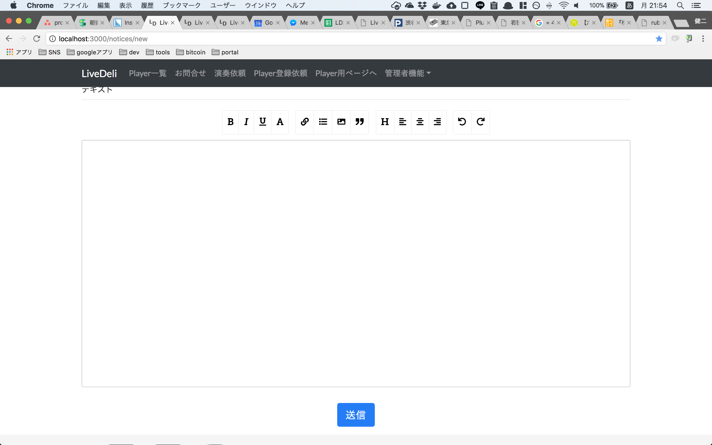
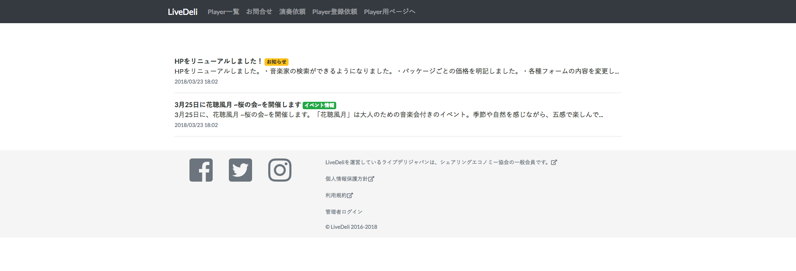

[Rails]ブログ機能を実装して、Herokuにuploadするまで
お知らせ投稿機能のようなシステムをrailsで実装します

目次
この記事はこんな人が書いています
 だちけん
だちけん
株式会社ムジカルを設立し、webアプリケーションの開発、webマーケティングを担当しています。
webアプリケーションでは、Vue.js、Ruby on Rails、Node.jsを用いての開発が得意です。
まったくゼロの状態から、要件定義を含めてシステム開発にとりかかったことで、幅広い知識を学習しながらよしなに進めるスキルを身につけました。
フリーランスとして、エンジニアリングやコンサルティングも行なっています。
詳しくはaboutを読んでみてください。
SEO用にブログをwebサービスと同じドメイン内で運用したいと思い、いろいろ調べて実装してみたので、その様子を公開します。
実装したかったのは、以下の機能。
- 文章をuploadできること
- 簡単に文字サイズ等も調整できること
- 文中に画像も挿入できること
※こちらの記事は、Qiitaにて公開していたものを2020/03/02にこちらに移行しています。
元記事はこちら
※現在はこちらのページのURLのみ記載されています。
それこそ、Qiitaの記事投稿画面がイメージでした。
「Rails ブログ」とかで調べてもなかなか出てこないですよね。誰がrailsについて書いているブログを検索するんだとイライラしました。
いろいろ調べるうちに、「エディタ」なるものを実装するのに近いことがわかってきました。
その中でも、今回は「Squire」を導入してみることに。
採用理由としては、使用しているのがRails5.0なので、gemとかあまり使いたくないな…(どうせうまくいかないんだろうな)というのと、こちらの記事(ruby on railsに最強のwysiwygエディタ、Squireを導入する)がいい感じにわかりやすかったことです。
DBを作成する
これはもうやっちゃってください。
ポイントとしては、textデータを入れ込みたい時にt.textにしておいたほうが無難っぽいことぐらいですかね。
詳しくはこちら(Railsのmodelで長い文字列を扱う時はstringではなくtextを使おう)にわかりやすく書かれていました。
もう大丈夫らしいですけどね。
私は今回「お知らせ」みたいなものを作るイメージだったので、noticeというDBを作りました。
# migrate/20180312121837_create_notices.rb
def change
create_table :notices do |t|
t.string :title
t.integer :tag #enumを使うので
t.text :text #ここがt.stringじゃないほうが無難みたい。
t.timestamps
end
end
モデルを作成する
次にモデルを作成します。
ここは何の特徴もなく、ただただ作成してもらえれば結構です。
# models/notice.rb
class Notice < ApplicationRecord
enum tag: { report: 1, event: 2, interview: 3, info: 4}
ALLOWED_PARAMS = [:id, :title, :tag, :text]
validates :title, presence: true
validates :tag, presence: true
validates :text, presence: true
end
tagにはenumを使ってます。
enumとselect_boxの組み合わせはこちら(【Rails】enum カラム用 select Form Helper を実装)がめちゃ便利です。
controller、viewを作成する
controllerにはとくに特徴がないので省略します。
viewはそれぞれこちらになります。
ポイントになりそうな部分だけまとめて書いておきますね。
_form.html.haml
/ notices/_form.html.haml
= form_for(@notice) do |f|
.form_errors
- if @notice.errors.any?
-@notice.errors.full_messages.each do |message|
.alert.alert-danger
=message
.form-group
= f.label :title, 'タイトル'
= f.text_field :title, placeholder: "例)こんなことがありました！", required: true, class: "form-control"
.form-group
= f.label :tag, 'タグ'
= f.enum_select :tag, {required: true, include_blank: false}, {class: "custom-select"}
.form-group
= f.label :text, 'テキスト'
= f.text_field :text, :class => 'form-control',:style =>'display:none'
= f.text_area :text, :id=>"seditor"
%hr.form-divider/
.col-12.text-center
= f.submit "送信", :class => 'btn btn-lg btn-primary mb-3'
テキストのtext_fieldを非表示にしておくこと、text_areaにIDを指定しておくことがポイントです。
edit.html.haml
/ notices/edit.html.haml
.container.mt-3
= javascript_tag do
var $notice_text = '#{raw @notice.text.gsub("'", "\\\\'")}';
= render 'form'
newは基本的に何も触らなくていいのですが、editの方はデータをsquireでとってきたtext_areaに写す必要があるので、jsの記載が必要です。
_notices.html.haml
/ notices/_notice.html.haml
.media.pt-3.border-bottom.border-gray
= link_to notice do
%p.media-body.pb-3.mb-0.text-dark
%strong
= notice.title
- if notice.tag == 'report'
%span.badge.badge-primary
= notice.tag_i18n
- if notice.tag == 'event'
%span.badge.badge-success
= notice.tag_i18n
- if notice.tag == 'interview'
%span.badge.badge-info
= notice.tag_i18n
- if notice.tag == 'info'
%span.badge.badge-warning
= notice.tag_i18n
%br/
= truncate(strip_tags(notice.text), :length => 70)
%br/
%small.text-muted
= notice.updated_at
- if admin_signed_in?
.btn-group.small.ml-2
= link_to "編集", edit_notice_path(notice), :class => "btn btn-sm btn-outline-secondary"
= link_to "削除", notice_path(notice), method: :delete, :class => "btn btn-sm btn-outline-secondary", data: {confirm: '削除してよろしいですか？'}
indexからパーシャルで飛ばしてきています。
= truncate(strip_tags(notice.text), :length => 70)
このようにすることで、タグを抜いた状態で70文字をカウントして持ってきます。
JS、CSSを作成する
ruby on railsに最強のwysiwygエディタ、Squireを導入すると同様にして、CSS、JSを作成します。
# app/assets/javascripts/squire.js.coffee
$(document).on 'turbolinks:load', -> # ここは変更しています。
UI = new SquireUI(
replace: 'textarea#seditor'
buildPath: "/"
height: 500
)
if typeof $notice_text != 'undefined'
UI.setHTML $notice_text
$('form').submit ->
$('#notice_text').val(UI.getHTML()).change()
return
squire-raw.js、Squire-UI.htmlも忘れず持ってきましょう。
squire-raw.jsが入っている、zipファイル: https://github.com/neilj/Squire
Squire-UI.html: http://neilj.github.io/Squire/build/Squire-UI.html
また、公式サンプルのダウンロードも忘れず行います。
JS：http://neilj.github.io/Squire/build/Squire-UI.js
CSS：http://neilj.github.io/Squire/build/Squire-UI.css
Squire-UI.cssは、名前をSquire-UI.scssに変更しておきましょう。
rails5では、turbolinksを使っているので、Squire-UI.jsの1行目をこのように変更しておきましょう。
$(document).on('turbolinks:load', function() {
プリコンパイル
最後に、Heroku上でも動作する様にプリコンパイルをしておきましょう。
ただ、デフォルトの設定ではJSが読み込まれないようになっているので、こちらを参考に、下記のように追記しプリコンパイルの設定を変更しておきましょう。
# config/initializers/asset.rb
# Precompile additional assets.
# application.js, application.css, and all non-JS/CSS in app/assets folder are already added.
# Rails.application.config.assets.precompile += %w( search.js )
Rails.application.config.assets.precompile += %w( *.js *application.css)
これで、こんな感じの画面ができるはずです。

indexはこんな感じ。管理者ログインをすると、横に編集、削除のボタンが出てきます。

コピペだけで色々やってみたのに、案外何とかなりましたね。
プリコンパイルのところを知らなくて、「ローカルではできたのに…！」ってなった以外は、とくに手こずらず実装できました。